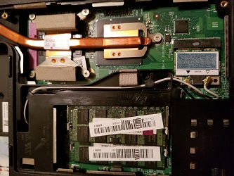

Switching to Linux
Do you know how great it is to run a Linux Kernel based operating system? I run some form of it on every PC I own. I wouldn’t have it any other way. My geriatric Dell laptop was the first. I was having a whole host of issues with it. It’s an Inspiron from the Vista days and it just could not handle running Windows any longer. I had already tried migrating to Windows 7 to no avail. I’d heard of Linux and I had a friend who suggested it often. I toyed around with idea plenty of times prior to the switch but one day I couldn’t boot. Windows was damaged, again, and I needed to try something new. I acted boldly out of desperation and chose Ubuntu 16.04 due to my friends suggestion and the fact that I found helpful information about it more readily.
Step 1: Picking a Distribution
My choice was already made. I wasn’t dumb with computers but my real interest in them hadn’t peaked yet. My good buddy had suggested Elementary OS but, after reading about it, I wanted something that had more software options. I looked into its mother OS, Ubuntu, and I was decided.
Step 2: The, Soon to be Familiar, Process
Pick an iso image for download and flash a zip drive with the image. I used UNetbootin per some suggestions I found on AskUbuntu.com. This site was the first stop to how I solved any problem I had for the next week. Followed by calling my aforementioned buddy and blaming him for some “Linux Failing.” Interestingly enough, none of the problems I ran into were based in Linux, but were actually just bad habits I had acquired over the years while running Windows. For example, I was sorely disappointed, I couldn’t download programs in the Windows fashion. I guess I really wanted to find something in the wild of the net and click two hundred times until it ran. I later realized it was actually less work, and safer, to acquire software the “Linux Way.”
root@pc ~ $sudo apt install program
Step 3: Love at First. . . Live Preview
What initially sold me on Ubuntu, and Linux in general, was that I could try it before I installed it. Not to mention that it was actually booting up. Kind of a big deal, right? Followed by not having my machine hijacked during the actual installation. That’s super weird. . . Then the restart. Wouldn’t you know it that my Dell rebooted in under 30 seconds. Old hdd, old everything else, formally taking more than 5 minutes from pressing the power button to launching Chrome had booted during the first boot up in under 30 seconds. It never lagged, or froze, or stuttered until I goofed it all up myself but that’s more of a personality trait than a Linux problem. I just like to dig into things and play with how they work. Some times a few things break.
End
The next computer that I installed Linux on was a server I built. After a few months getting acquainted with Linux and learning how to tweak it I put together a Frankenstein-ish machine as a server. Once again I went with Ubuntu 16.04. This time the server iso. This, with a few automation oriented applications, was an amazing evolution for my Plex server. Taking my home media, and now anywhere, experience to new heights.
Finally there was a computer I had planned on building for months. Meticulously going through part lists and vendors. Comparing price, performance, and everything I could think of until, money saved and mind made up, I pulled the trigger. Even after all this I still had it in my mind that I would eventually get Windows running on the machine. I built my new machine and named it Gargantuan-Machina. I installed Solus 3 on it and I’ve loved every minute of use I’ve had since. I currently have no plans to ever run Windows on it.
That, briefly, is the story of my switch. I’d love to hear about yours. There are many similar stories about people and their first experiences with Linux. There a great many differences too. I’d love to hear from you about your transition from proprietary software. If you’re interested in sharing please send it here. There’s a chance you’ll be included in an upcoming user feedback post.